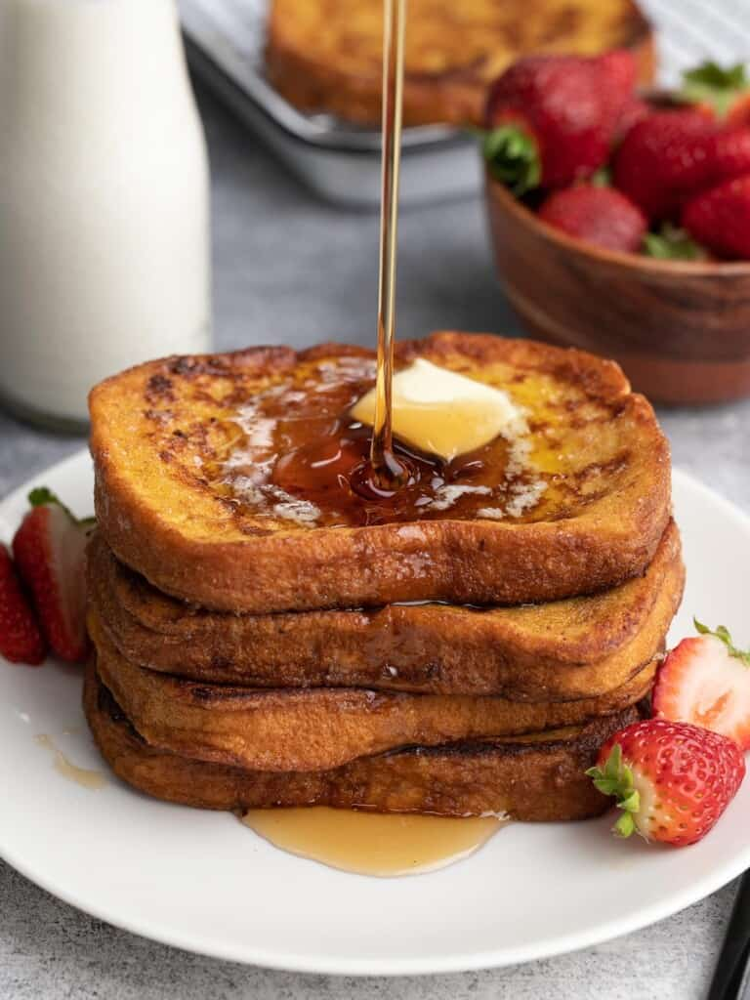

Chiken Sandwich

Indulge in a comforting breakfast of bread soaked in egg and milk, cooked
until golden brown—a delicious dish perfect with syrup or fruit on top.
Ingredients:
- 4 slices of bread
- 2 eggs
- 1/2 cup milk
- 1 teaspoon vanilla extract
- 1 teaspoon ground cinnamon
- Butter or oil for cooking
- Maple syrup, fruit, or powdered sugar for serving (optional)
Steps to Make:
-
In a bowl, whisk together eggs, milk, vanilla extract, and cinnamon.
- Heat butter or oil in a skillet over medium heat.
- Dip each slice of bread into the egg mixture, coating both sides.
-
Place the coated bread slices onto the skillet and cook until golden
brown on both sides, about 2-3 minutes per side.
-
Remove from the skillet and serve warm, optionally topped with maple
syrup, fruit, or powdered sugar.